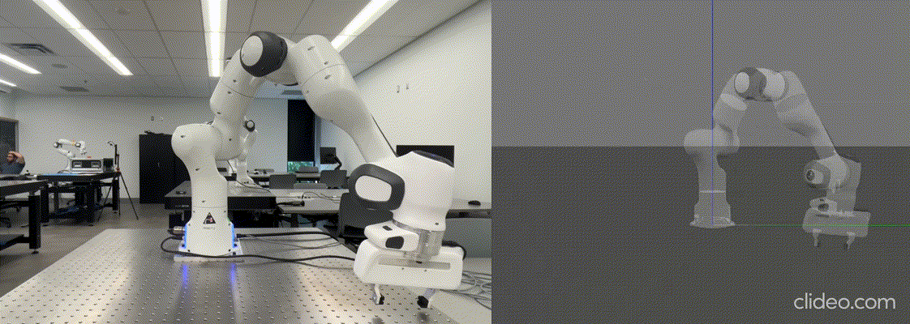

3. Franka Toolbox Bridge — Unified Simulation & Real-Robot ControlFramework
University of Toronto Robotics Lab — 2025
Franka Toolbox Bridge is a unified Python framework that allows the same code to control the Franka Emika Panda robot in both simulation and real hardware, simply by switching one parameter. It integrates the Python Robotics Toolbox (RTB) for visualization and Franky/libfranka for real hardware control, removing the need for ROS/C++ and enabling safe, accessible, and reproducible robot programming.



3.1 Background & Problem
Before this framework, users had to work with two separate systems:
RTB simulation — accessible, good for visualization, but cannot control real robots.
libfranka (C++/ROS) — controls the real robot, but has no visualization, no safety preview, and requires heavy setup.
Because these systems use different trajectory planners, results were inconsistent and difficult to reproduce. Users had to maintain two codebases, and had no way to preview trajectories before executing them on hardware—a major safety concern .
3.2 System Overview & Core Capabilities
I developed Franka-Toolbox-Bridge as a single, cohesive Python API that unifies simulation and real control:
One codebase for both worlds — develop safely in Swift/RTB, then deploy to the real robot with no code changes.
Three control modes (from GitHub page 2):
Simulation-only (Swift)
Real Robot Control (libfranka/Franky)
Sim-Lead-Real (Predictive Twin) — simulation runs ahead of hardware to preview and ensure safe execution.
Multi-robot support — synchronize multiple Panda arms for cooperative tasks.
Joint, Cartesian, velocity, and gripper control via a simple, unified set of functions.
No ROS required, installation possible via one-line script .
This design allows developers to test any trajectory in simulation, verify feasibility & collisions, then confidently execute it on the real robot.
3.3 My Contributions
Based on your research statement and repo:
1. Architecture & API Development
Built the Control Bridge, the core abstraction layer that handles all three modes (sim-only, real-only, predictive).
Implemented jointM and CartesianM control modules inside the unified API .
Added multi-robot support for synchronized motion and handoff tasks.
2. Trajectory Planning Integration
Integrated the Ruckig real-time trajectory generator into simulation so that simulation and hardware share identical jerk-limited trajectories—fixing the mismatch between RTB and libfranka planning pipelines .
3. Safety Enhancements
Designed the Sim-Lead-Real predictive mode, allowing the robot to “ghost-preview” motions 3 seconds ahead, letting users visually verify safety before hardware executes .
Implemented safeguards linked to Swift visualization.
4. Critical Bug Discovery & Fix Contribution
Identified a control-cycle instability in Franky (1 ms control loop misses leading to oscillations).
Proposed a fix that was later adopted by the Franky maintainer, improving reliability for the research community .
5. Educational Adoption
The framework was used in CSC376H5 – Fundamentals of Robotics at University of Toronto Mississauga, supporting real-robot teaching demos and assignments .
3.4 How It Works — Step-by-Step (With Screenshots)
1. Define Robots
Users specify the robot’s IP (for real control) and its pose in RTB/Swift.
robot1 = Robot(ip="192.168.1.108", x=0, y=0, z=0, rz=0)
robot2 = Robot(ip="192.168.1.107", x=1.175, y=0.05, z=0, rz=np.pi)
2. Choose Control Mode (Single Line Change)
bridge = MyPanda(use_real=False, predictive_delay_ms=-1) # Simulation
bridge = MyPanda(use_real=True, predictive_delay_ms=-1) # Real Robot
bridge = MyPanda(use_real=True, predictive_delay_ms=3000) # Sim-Lead-Real
3. Run Joint / Cartesian Motions
bridge.robot_jointPose(robot1, q_target)
bridge.robot_cartesianPose(robot1, se3_target)
bridge.robot_gripper_move(robot1, target_width=0.04, speed=0.02)
4. Preview in Simulation, Then Execute on Robot
Using a single script, users can:
verify trajectory in Swift (simulation),
preview a semi-transparent “ghost motion” (predictive mode),
then run on the real hardware with confidence.
3.5 Impact
Educational — adopted at UTM Robotics to teach real robot motion control in course CSC376H5 – Fundamentals of Robotics
Safety — predictive simulation drastically reduces hardware risk.
Accessibility — eliminates the need for ROS/C++, enabling beginners to program a real robot entirely in Python.
Research — supports multi-robot collaboration, trajectory preview, and reproducible experiments.
Community Contribution — upstream bug fix improved the stability of Franky/libfranka.